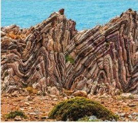
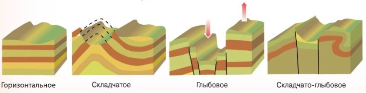
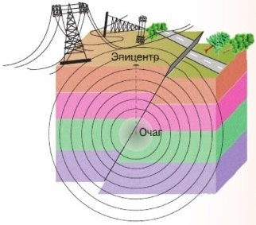
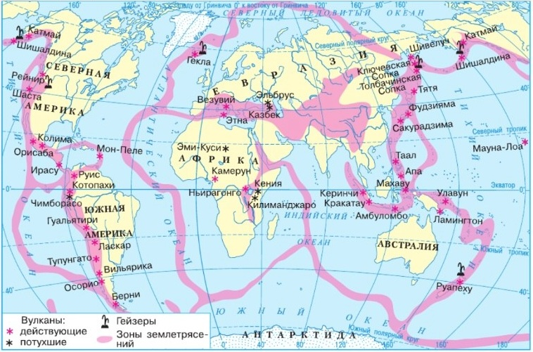

Какие движения испытывает земная кора?
На обрыве иногда видны полосы камня. Если они изгибаются или обрываются на разной высоте, по ним можно понять, что происходило с породой.
При вертикальном движении участок коры поднимается или опускается. Например, в некоторых местах Скандинавии поверхность поднимается примерно на сантиметр в год.
При горизонтальном движении участок сдвигается в сторону. Вспомни литосферные плиты из §21. У одного участка могут быть оба движения сразу.
Вы уже знаете, что земная кора не остаётся неизменной, неподвижной. Внутренние силы приводят в движение её крупные блоки, а внешние силы действуют на поверхности.
Движения земной коры могут быть очень медленными, незаметными для человека. А могут быть и очень быстрыми, внезапными: в течение нескольких секунд одни участки земной коры опускаются, а другие поднимаются. По направлению движения бывают вертикальные и горизонтальные, как правило, они происходят одновременно. Пример вертикальных колебаний земной коры — поднятие со скоростью 1 см в год Скандинавского полуострова и опускание побережий, например, Северного моря или Венецианского залива. В горизонтальном направлении перемещаются уже знакомые вам литосферные плиты.
Слои породы могут сжаться и изогнуться. Изгиб называют складкой. Трещина, по которой соседние куски пород сдвинулись, называется разломом. В одном обрыве бывают видны и складки, и разломы.
Озеро Байкал лежит в глубокой впадине, связанной с разломами земной коры.
В результате движений земной коры в её слоях возникают сжатия и растяжения. Пласты горных пород сминаются в складки (рис. 55), трескаются или разрываются разломами на огромные глыбы, смещаются относительно друг друга (рис. 56). Например, на месте глубокого разлома земной коры образовалось озеро Байкал.
История движений земной коры отражается как в зеркале в залегании горных пород. Мы можем видеть это своими глазами, например, на обнажённых склонах гор или обрывистых берегах рек.

▲ Проследи глазами одну светлую полосу. Где она изгибается?

▲ Найди схему со складками и разломами одновременно.
Вертикальные движения поднимают или опускают участки коры. Горизонтальные смещают плиты и меньшие блоки в стороны.
1. Подъём составляет 1 см в год. Как изменится высота за сто лет, если скорость сохранится?
2. Ты видишь одну и ту же тёмную полосу по обе стороны трещины, но на разной высоте. Что это подсказывает?
Как возникают землетрясения?
Представь, что два участка породы упёрлись друг в друга. Они долго не сдвигаются. Когда породы внезапно срываются с места, толчок расходится во все стороны. Так возникает землетрясение.
Разрыв начинается в глубине, в очаге. Точка на поверхности прямо над ним называется эпицентром. От очага расходятся волны, которые раскачивают поверхность.
Одно из самых опасных проявлений движений земной коры — землетрясение. Это явление может привести к огромным разрушениям и гибели людей. За последние 100 лет от последствий землетрясений погибло более 1 млн человек.
В земной коре или в верхнем слое мантии на глубине до десятков километров внезапно происходит разрыв и смещение горных пород. Возникает очаг землетрясения, откуда, сотрясая толщи горных пород, во все стороны распространяются колебания (рис. 57). Чем глубже очаг, тем на большую площадь распространяется землетрясение. На земной поверхности мы эти колебания ощущаем как толчок или серию толчков. Эпицентр (от греческого слова эпи — над) землетрясения располагается на земной поверхности непосредственно над очагом. Там возникают наиболее сильные разрушения.

▲ Проведи мысленно вертикальную линию от очага вверх. Где она выйдет на поверхность?
Землетрясения часто происходят вдоль границ плит. На карте розовым показаны сейсмические пояса. Проследи один вдоль берегов Тихого океана, а другой от Альп к Гималаям. В России в учебнике отмечены, например, Камчатка, Курилы, Сахалин, Кавказ и Алтай.
Датчики сейсмических станций записывают колебания. Интенсивность показывает, как сильно трясло и что произошло с постройками в конкретном месте. По российской шкале такую интенсивность описывают в баллах от 1 до 12. Точный момент будущего землетрясения заранее определить пока нельзя.
Землетрясения происходят в основном на границах литосферных плит и в местах их крупных разрывов — в горных районах и в океанах. На карте (рис. 58) показаны участки, где землетрясения часты и сильны, — сейсмические пояса. Самые крупные из них проходят вдоль побережья Тихого океана и по поясу высоких гор Евразии — Альп и Гималаев. В нашей стране опасными районами являются Кавказ, Крым, Саяны, Алтай, горы северного Забайкалья, полуостров Камчатка, острова Сахалин и Курильские.
Сила землетрясений оценивается по тем повреждениям, которые они причиняют в населённых районах. В России принята 12-балльная шкала. Чем выше балл, тем разрушительнее землетрясение. В мире созданы сотни сейсмических станций, которые регистрируют даже незначительные колебания земной коры. Однако до сих пор учёные не могут предсказать момент землетрясения заранее.

▲ Найди пояс землетрясений вдоль Тихого океана. На каких его сторонах есть вулканы?
В учебнике среди стран с частыми землетрясениями названы Япония, Китай, Филиппины, Индонезия, Иран, Турция, Афганистан, Чили, Перу, Мексика, США и Россия. Риск различается и внутри каждой страны.
При резких смещениях пород возникают колебания. Они расходятся от очага, а на поверхности ощущаются как толчки.
3. На схеме очаг лежит глубже, но остаётся прямо под той же точкой. Сдвинется ли эпицентр?
4. Почему на карте у западного берега Южной Америки рядом есть вулканы и землетрясения?
Итоги параграфа
- Найдите на карте в атласе: Скандинавский полуостров, Северное море, озеро Байкал, горы Саяны, Алтай.
- На политической карте в атласе найдите страны, на территориях которых происходят частые и сильные землетрясения.
- Какие виды движений земной коры вы знаете? Приведите примеры.
- Как изменяется залегание горных пород в результате движений земной коры?
- Почему происходят землетрясения?
- Участок земной поверхности, где с наибольшей силой проявляется землетрясение, называется: а) разломом, б) очагом, в) эпицентром.
- В каком из перечисленных городов наиболее вероятно землетрясение: а) Санкт-Петербург, б) Нью-Йорк, в) Париж, г) Мехико?
- На контурную карту нанесите штриховкой районы землетрясений на Земле.
- Рассмотрите рисунок 56. Объясните, какие явления иллюстрируют вторая и четвёртая блок-диаграммы.
Проверь себя
Берег немного поднялся
При подъёме высота растёт.
Две плиты отодвинулись друг от друга
Они разошлись вдоль поверхности.
Один участок коры опустился
Он переместился вниз.
Две плиты сдвинулись вдоль границы
Они изменили положение относительно друг друга.
1. Какое движение показано стрелкой вниз?
2. Когда слои изгибаются и продолжаются без разрыва, что видно на схеме?
3. Где начинается землетрясение?
4. Где находится эпицентр?
5. Где землетрясения происходят особенно часто?
6. Что записывают датчики сейсмической станции?
Расскажи вслух
Куда движутся участки коры
- Покажи два направления.
- Приведи пример подъёма.
- Приведи пример горизонтального движения.
Складки и разломы
- Выбери на рис. 56 ровный слой.
- Сравни его со складкой.
- Найди разлом и объясни, что сместилось.
От очага до поверхности
- Объясни, как начинается толчок.
- Покажи очаг и эпицентр.
- Расскажи, что измеряет станция.
Землетрясения на карте
- Найди легенду рисунка 58.
- Покажи пояс вокруг Тихого океана.
- Назови район России в этом поясе.